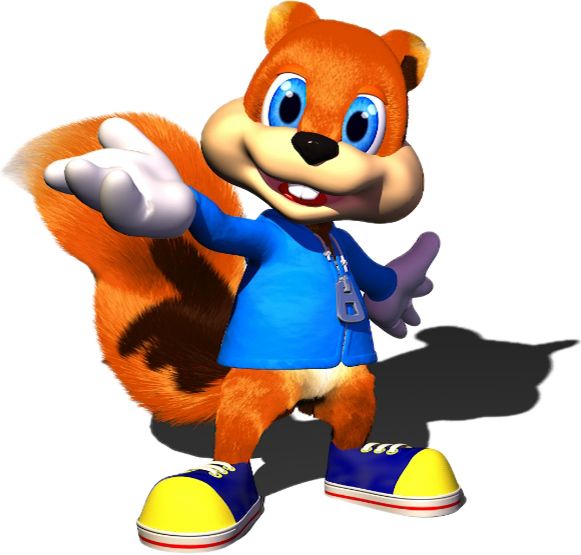
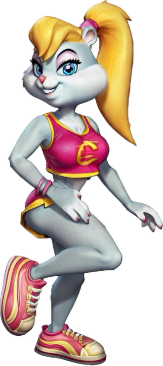
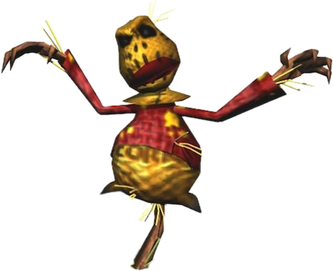

| Images | Name | Characteristics |
|---|---|---|
|  | Conker | A snarky and cynical squirrel who's trying to find a way back to his girlfriend Berri. |
|  | Berri | Conker's girlfriend. She's kidnapped by the Rockmen and later joins the Weasel Mafia. |
|  | Birdy | A drunkard scarecrow who teaches Conker about Context Sensitive B Buttons, though for a price. |